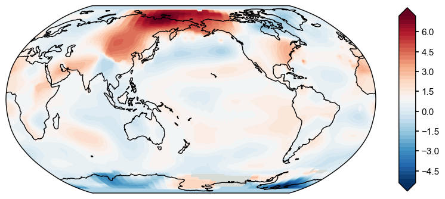
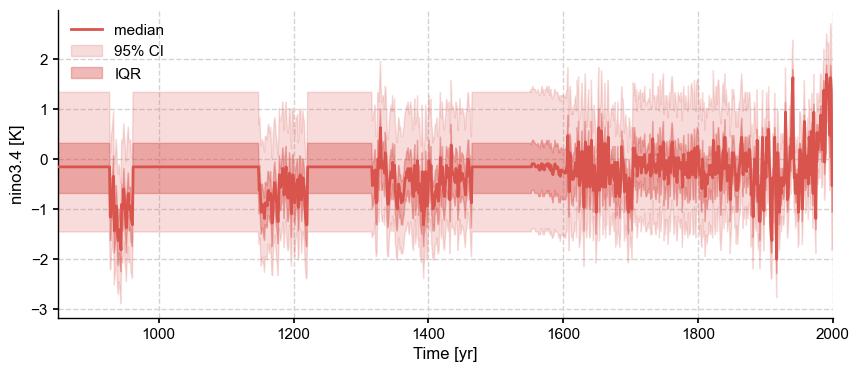

<!DOCTYPE html>
<html >
  <head>
    <meta charset="utf-8">
    <meta name="viewport" content="width=device-width,initial-scale=1">
      <title>LMRt Quickstart</title>
    
      <link rel="stylesheet" href="../_static/pygments.css">
      <link rel="stylesheet" href="../_static/theme.css">
      <link rel="stylesheet" href="../_static/sphinx_press_theme.css">
      
      <script type="text/javascript" id="documentation_options" data-url_root="../" src="../_static/documentation_options.js"></script>

      <!-- sphinx script_files -->
        <script src="../_static/jquery.js"></script>
        <script src="../_static/underscore.js"></script>
        <script src="../_static/doctools.js"></script>

      
      <script src="../_static/theme-vendors.js"></script>
      <script src="../_static/theme.js" defer></script>
    
  <link rel="index" title="Index" href="../genindex.html" />
  <link rel="search" title="Search" href="../search.html" />
  <link rel="next" title="User Interface" href="../ui.html" />
  <link rel="prev" title="Tutorial" href="../tutorial.html" /> 
  </head>

  <body>
    <div id="app" class="theme-container" :class="pageClasses"><navbar @toggle-sidebar="toggleSidebar">
  <router-link to="../index.html" class="home-link">
    
      <span class="site-name">LMR Turbo</span>
    
  </router-link>

  <div class="links">
    <navlinks class="can-hide">


    </navlinks>
  </div>
</navbar>

      
      <div class="sidebar-mask" @click="toggleSidebar(false)">
      </div>
        <sidebar @toggle-sidebar="toggleSidebar">
          
          <navlinks>
            


            
          </navlinks><div id="searchbox" class="searchbox" role="search">
  <div class="caption"><span class="caption-text">Quick search</span>
    <div class="searchformwrapper">
      <form class="search" action="../search.html" method="get">
        <input type="text" name="q" />
        <input type="submit" value="Search" />
        <input type="hidden" name="check_keywords" value="yes" />
        <input type="hidden" name="area" value="default" />
      </form>
    </div>
  </div>
</div><div class="sidebar-links" role="navigation" aria-label="main navigation">
  
    <div class="sidebar-group">
      <p class="caption">
        <span class="caption-text"><a href="../index.html#how-to-cite">Contents</a></span>
      </p>
      <ul class="">
        
          <li class="toctree-l1 "><a href="../tutorial.html" class="reference internal ">Tutorial</a>

            
          </li>

        
          <li class="toctree-l1 "><a href="../ui.html" class="reference internal ">User Interface</a>

            
          </li>

        
      </ul>
    </div>
  
</div>
        </sidebar>

      <page>
          <div class="body-header" role="navigation" aria-label="navigation">
  
  <ul class="breadcrumbs">
    <li><a href="../index.html">Docs</a> &raquo;</li>
    
      <li><a href="../tutorial.html">Tutorial</a> &raquo;</li>
    
    <li>LMRt Quickstart</li>
  </ul>
  

  <ul class="page-nav">
  <li class="prev">
    <a href="../tutorial.html"
       title="previous chapter">← Tutorial</a>
  </li>
  <li class="next">
    <a href="../ui.html"
       title="next chapter">User Interface →</a>
  </li>
</ul>
  
</div>
<hr>
          <div class="content" role="main">
            
  <div class="section" id="lmrt-quickstart">
<h1>LMRt Quickstart<a class="headerlink" href="#lmrt-quickstart" title="Permalink to this headline">¶</a></h1>
<p>In this tutorial, we will demonstrate a basic workflow of LMR. We will
assimilate coral records from the PAGES2k v2 database and use CCSM4 as
the prior. GISTEMP will be used as the instrumental temperature
observation for the calibration of the linear regression based PSM.</p>
<div class="highlight-ipython3 notranslate"><div class="highlight"><pre><span></span><span class="o">%</span><span class="k">load_ext</span> autoreload
<span class="o">%</span><span class="k">autoreload</span> 2

<span class="kn">import</span> <span class="nn">LMRt</span>
<span class="kn">import</span> <span class="nn">os</span>
<span class="kn">import</span> <span class="nn">numpy</span> <span class="k">as</span> <span class="nn">np</span>
<span class="kn">import</span> <span class="nn">pandas</span> <span class="k">as</span> <span class="nn">pd</span>
<span class="kn">import</span> <span class="nn">xarray</span> <span class="k">as</span> <span class="nn">xr</span>
</pre></div>
</div>
<div class="highlight-ipython3 notranslate"><div class="highlight"><pre><span></span><span class="kn">import</span> <span class="nn">wget</span>
<span class="kn">import</span> <span class="nn">ssl</span>
<span class="n">ssl</span><span class="o">.</span><span class="n">_create_default_https_context</span> <span class="o">=</span> <span class="n">ssl</span><span class="o">.</span><span class="n">_create_unverified_context</span>

<span class="n">url</span> <span class="o">=</span> <span class="s1">&#39;https://earth.usc.edu/~fengzhu/lmrt_tests/PAGES2k_CCSM4_GISTEMP.tar.xz&#39;</span>
<span class="n">wget</span><span class="o">.</span><span class="n">download</span><span class="p">(</span><span class="n">url</span><span class="p">)</span>
</pre></div>
</div>
<div class="highlight-default notranslate"><div class="highlight"><pre><span></span><span class="o">---------------------------------------------------------------------------</span>

<span class="ne">KeyboardInterrupt</span>                         <span class="n">Traceback</span> <span class="p">(</span><span class="n">most</span> <span class="n">recent</span> <span class="n">call</span> <span class="n">last</span><span class="p">)</span>

<span class="o">&lt;</span><span class="n">ipython</span><span class="o">-</span><span class="nb">input</span><span class="o">-</span><span class="mi">12</span><span class="o">-</span><span class="mi">9605</span><span class="n">b1838e56</span><span class="o">&gt;</span> <span class="ow">in</span> <span class="o">&lt;</span><span class="n">module</span><span class="o">&gt;</span>
      <span class="mi">4</span>
      <span class="mi">5</span> <span class="n">url</span> <span class="o">=</span> <span class="s1">&#39;https://earth.usc.edu/~fengzhu/lmrt_tests/PAGES2k_CCSM4_GISTEMP.tar.xz&#39;</span>
<span class="o">----&gt;</span> <span class="mi">6</span> <span class="n">wget</span><span class="o">.</span><span class="n">download</span><span class="p">(</span><span class="n">url</span><span class="p">)</span>


<span class="o">~/</span><span class="n">Apps</span><span class="o">/</span><span class="n">miniconda3</span><span class="o">/</span><span class="n">envs</span><span class="o">/</span><span class="n">presto</span><span class="o">/</span><span class="n">lib</span><span class="o">/</span><span class="n">python3</span><span class="o">.</span><span class="mi">8</span><span class="o">/</span><span class="n">site</span><span class="o">-</span><span class="n">packages</span><span class="o">/</span><span class="n">wget</span><span class="o">.</span><span class="n">py</span> <span class="ow">in</span> <span class="n">download</span><span class="p">(</span><span class="n">url</span><span class="p">,</span> <span class="n">out</span><span class="p">,</span> <span class="n">bar</span><span class="p">)</span>
    <span class="mi">524</span>     <span class="k">else</span><span class="p">:</span>
    <span class="mi">525</span>         <span class="n">binurl</span> <span class="o">=</span> <span class="n">url</span>
<span class="o">--&gt;</span> <span class="mi">526</span>     <span class="p">(</span><span class="n">tmpfile</span><span class="p">,</span> <span class="n">headers</span><span class="p">)</span> <span class="o">=</span> <span class="n">ulib</span><span class="o">.</span><span class="n">urlretrieve</span><span class="p">(</span><span class="n">binurl</span><span class="p">,</span> <span class="n">tmpfile</span><span class="p">,</span> <span class="n">callback</span><span class="p">)</span>
    <span class="mi">527</span>     <span class="n">filename</span> <span class="o">=</span> <span class="n">detect_filename</span><span class="p">(</span><span class="n">url</span><span class="p">,</span> <span class="n">out</span><span class="p">,</span> <span class="n">headers</span><span class="p">)</span>
    <span class="mi">528</span>     <span class="k">if</span> <span class="n">outdir</span><span class="p">:</span>


<span class="o">~/</span><span class="n">Apps</span><span class="o">/</span><span class="n">miniconda3</span><span class="o">/</span><span class="n">envs</span><span class="o">/</span><span class="n">presto</span><span class="o">/</span><span class="n">lib</span><span class="o">/</span><span class="n">python3</span><span class="o">.</span><span class="mi">8</span><span class="o">/</span><span class="n">urllib</span><span class="o">/</span><span class="n">request</span><span class="o">.</span><span class="n">py</span> <span class="ow">in</span> <span class="n">urlretrieve</span><span class="p">(</span><span class="n">url</span><span class="p">,</span> <span class="n">filename</span><span class="p">,</span> <span class="n">reporthook</span><span class="p">,</span> <span class="n">data</span><span class="p">)</span>
    <span class="mi">274</span>
    <span class="mi">275</span>             <span class="k">while</span> <span class="kc">True</span><span class="p">:</span>
<span class="o">--&gt;</span> <span class="mi">276</span>                 <span class="n">block</span> <span class="o">=</span> <span class="n">fp</span><span class="o">.</span><span class="n">read</span><span class="p">(</span><span class="n">bs</span><span class="p">)</span>
    <span class="mi">277</span>                 <span class="k">if</span> <span class="ow">not</span> <span class="n">block</span><span class="p">:</span>
    <span class="mi">278</span>                     <span class="k">break</span>


<span class="o">~/</span><span class="n">Apps</span><span class="o">/</span><span class="n">miniconda3</span><span class="o">/</span><span class="n">envs</span><span class="o">/</span><span class="n">presto</span><span class="o">/</span><span class="n">lib</span><span class="o">/</span><span class="n">python3</span><span class="o">.</span><span class="mi">8</span><span class="o">/</span><span class="n">http</span><span class="o">/</span><span class="n">client</span><span class="o">.</span><span class="n">py</span> <span class="ow">in</span> <span class="n">read</span><span class="p">(</span><span class="bp">self</span><span class="p">,</span> <span class="n">amt</span><span class="p">)</span>
    <span class="mi">456</span>             <span class="c1"># Amount is given, implement using readinto</span>
    <span class="mi">457</span>             <span class="n">b</span> <span class="o">=</span> <span class="nb">bytearray</span><span class="p">(</span><span class="n">amt</span><span class="p">)</span>
<span class="o">--&gt;</span> <span class="mi">458</span>             <span class="n">n</span> <span class="o">=</span> <span class="bp">self</span><span class="o">.</span><span class="n">readinto</span><span class="p">(</span><span class="n">b</span><span class="p">)</span>
    <span class="mi">459</span>             <span class="k">return</span> <span class="nb">memoryview</span><span class="p">(</span><span class="n">b</span><span class="p">)[:</span><span class="n">n</span><span class="p">]</span><span class="o">.</span><span class="n">tobytes</span><span class="p">()</span>
    <span class="mi">460</span>         <span class="k">else</span><span class="p">:</span>


<span class="o">~/</span><span class="n">Apps</span><span class="o">/</span><span class="n">miniconda3</span><span class="o">/</span><span class="n">envs</span><span class="o">/</span><span class="n">presto</span><span class="o">/</span><span class="n">lib</span><span class="o">/</span><span class="n">python3</span><span class="o">.</span><span class="mi">8</span><span class="o">/</span><span class="n">http</span><span class="o">/</span><span class="n">client</span><span class="o">.</span><span class="n">py</span> <span class="ow">in</span> <span class="n">readinto</span><span class="p">(</span><span class="bp">self</span><span class="p">,</span> <span class="n">b</span><span class="p">)</span>
    <span class="mi">500</span>         <span class="c1"># connection, and the user is reading more bytes than will be provided</span>
    <span class="mi">501</span>         <span class="c1"># (for example, reading in 1k chunks)</span>
<span class="o">--&gt;</span> <span class="mi">502</span>         <span class="n">n</span> <span class="o">=</span> <span class="bp">self</span><span class="o">.</span><span class="n">fp</span><span class="o">.</span><span class="n">readinto</span><span class="p">(</span><span class="n">b</span><span class="p">)</span>
    <span class="mi">503</span>         <span class="k">if</span> <span class="ow">not</span> <span class="n">n</span> <span class="ow">and</span> <span class="n">b</span><span class="p">:</span>
    <span class="mi">504</span>             <span class="c1"># Ideally, we would raise IncompleteRead if the content-length</span>


<span class="o">~/</span><span class="n">Apps</span><span class="o">/</span><span class="n">miniconda3</span><span class="o">/</span><span class="n">envs</span><span class="o">/</span><span class="n">presto</span><span class="o">/</span><span class="n">lib</span><span class="o">/</span><span class="n">python3</span><span class="o">.</span><span class="mi">8</span><span class="o">/</span><span class="n">socket</span><span class="o">.</span><span class="n">py</span> <span class="ow">in</span> <span class="n">readinto</span><span class="p">(</span><span class="bp">self</span><span class="p">,</span> <span class="n">b</span><span class="p">)</span>
    <span class="mi">667</span>         <span class="k">while</span> <span class="kc">True</span><span class="p">:</span>
    <span class="mi">668</span>             <span class="k">try</span><span class="p">:</span>
<span class="o">--&gt;</span> <span class="mi">669</span>                 <span class="k">return</span> <span class="bp">self</span><span class="o">.</span><span class="n">_sock</span><span class="o">.</span><span class="n">recv_into</span><span class="p">(</span><span class="n">b</span><span class="p">)</span>
    <span class="mi">670</span>             <span class="k">except</span> <span class="n">timeout</span><span class="p">:</span>
    <span class="mi">671</span>                 <span class="bp">self</span><span class="o">.</span><span class="n">_timeout_occurred</span> <span class="o">=</span> <span class="kc">True</span>


<span class="o">~/</span><span class="n">Apps</span><span class="o">/</span><span class="n">miniconda3</span><span class="o">/</span><span class="n">envs</span><span class="o">/</span><span class="n">presto</span><span class="o">/</span><span class="n">lib</span><span class="o">/</span><span class="n">python3</span><span class="o">.</span><span class="mi">8</span><span class="o">/</span><span class="n">ssl</span><span class="o">.</span><span class="n">py</span> <span class="ow">in</span> <span class="n">recv_into</span><span class="p">(</span><span class="bp">self</span><span class="p">,</span> <span class="n">buffer</span><span class="p">,</span> <span class="n">nbytes</span><span class="p">,</span> <span class="n">flags</span><span class="p">)</span>
   <span class="mi">1239</span>                   <span class="s2">&quot;non-zero flags not allowed in calls to recv_into() on </span><span class="si">%s</span><span class="s2">&quot;</span> <span class="o">%</span>
   <span class="mi">1240</span>                   <span class="bp">self</span><span class="o">.</span><span class="vm">__class__</span><span class="p">)</span>
<span class="o">-&gt;</span> <span class="mi">1241</span>             <span class="k">return</span> <span class="bp">self</span><span class="o">.</span><span class="n">read</span><span class="p">(</span><span class="n">nbytes</span><span class="p">,</span> <span class="n">buffer</span><span class="p">)</span>
   <span class="mi">1242</span>         <span class="k">else</span><span class="p">:</span>
   <span class="mi">1243</span>             <span class="k">return</span> <span class="nb">super</span><span class="p">()</span><span class="o">.</span><span class="n">recv_into</span><span class="p">(</span><span class="n">buffer</span><span class="p">,</span> <span class="n">nbytes</span><span class="p">,</span> <span class="n">flags</span><span class="p">)</span>


<span class="o">~/</span><span class="n">Apps</span><span class="o">/</span><span class="n">miniconda3</span><span class="o">/</span><span class="n">envs</span><span class="o">/</span><span class="n">presto</span><span class="o">/</span><span class="n">lib</span><span class="o">/</span><span class="n">python3</span><span class="o">.</span><span class="mi">8</span><span class="o">/</span><span class="n">ssl</span><span class="o">.</span><span class="n">py</span> <span class="ow">in</span> <span class="n">read</span><span class="p">(</span><span class="bp">self</span><span class="p">,</span> <span class="nb">len</span><span class="p">,</span> <span class="n">buffer</span><span class="p">)</span>
   <span class="mi">1097</span>         <span class="k">try</span><span class="p">:</span>
   <span class="mi">1098</span>             <span class="k">if</span> <span class="n">buffer</span> <span class="ow">is</span> <span class="ow">not</span> <span class="kc">None</span><span class="p">:</span>
<span class="o">-&gt;</span> <span class="mi">1099</span>                 <span class="k">return</span> <span class="bp">self</span><span class="o">.</span><span class="n">_sslobj</span><span class="o">.</span><span class="n">read</span><span class="p">(</span><span class="nb">len</span><span class="p">,</span> <span class="n">buffer</span><span class="p">)</span>
   <span class="mi">1100</span>             <span class="k">else</span><span class="p">:</span>
   <span class="mi">1101</span>                 <span class="k">return</span> <span class="bp">self</span><span class="o">.</span><span class="n">_sslobj</span><span class="o">.</span><span class="n">read</span><span class="p">(</span><span class="nb">len</span><span class="p">)</span>


<span class="ne">KeyboardInterrupt</span><span class="p">:</span>
</pre></div>
</div>
<div class="section" id="preprocessing">
<h2>Preprocessing<a class="headerlink" href="#preprocessing" title="Permalink to this headline">¶</a></h2>
<p>We will first create the <code class="docutils literal notranslate"><span class="pre">job</span></code> object and then perform the
preprocessing steps, after which the <code class="docutils literal notranslate"><span class="pre">job</span></code> will be ready to run.</p>
<div class="highlight-ipython3 notranslate"><div class="highlight"><pre><span></span><span class="n">job</span> <span class="o">=</span> <span class="n">LMRt</span><span class="o">.</span><span class="n">ReconJob</span><span class="p">()</span>
<span class="n">job</span><span class="o">.</span><span class="n">load_configs</span><span class="p">(</span><span class="n">cfg_path</span><span class="o">=</span><span class="s1">&#39;../examples/pages2k_CCSM4/configs.yml&#39;</span><span class="p">,</span> <span class="n">verbose</span><span class="o">=</span><span class="kc">True</span><span class="p">)</span>
</pre></div>
</div>
<div class="highlight-default notranslate"><div class="highlight"><pre><span></span>LMRt: job.load_configs() &gt;&gt;&gt; loading reconstruction configurations from: ../examples/pages2k_CCSM4/configs.yml
LMRt: job.load_configs() &gt;&gt;&gt; job.configs created
LMRt: job.load_configs() &gt;&gt;&gt; job.configs[&quot;job_dirpath&quot;] = /Users/fzhu/Github/LMRt_rework/examples/pages2k_CCSM4/recon
LMRt: job.load_configs() &gt;&gt;&gt; /Users/fzhu/Github/LMRt_rework/examples/pages2k_CCSM4/recon created
{&#39;anom_period&#39;: [1951, 1980],
 &#39;job_dirpath&#39;: &#39;/Users/fzhu/Github/LMRt_rework/examples/pages2k_CCSM4/recon&#39;,
 &#39;job_id&#39;: &#39;LMRt_quickstart&#39;,
 &#39;obs_path&#39;: {&#39;tas&#39;: &#39;./data/obs/gistemp1200_ERSSTv4.nc&#39;},
 &#39;obs_varname&#39;: {&#39;tas&#39;: &#39;tempanomaly&#39;},
 &#39;prior_path&#39;: {&#39;tas&#39;: &#39;./data/prior/tas_sfc_Amon_CCSM4_past1000_085001-185012.nc&#39;},
 &#39;prior_regrid_ntrunc&#39;: 42,
 &#39;prior_season&#39;: [1, 2, 3, 4, 5, 6, 7, 8, 9, 10, 11, 12],
 &#39;prior_varname&#39;: {&#39;tas&#39;: &#39;tas&#39;},
 &#39;proxy_frac&#39;: 0.75,
 &#39;proxydb_path&#39;: &#39;./data/proxy/pages2k_dataset.pkl&#39;,
 &#39;psm_calib_period&#39;: [1850, 2015],
 &#39;ptype_psm&#39;: {&#39;coral.SrCa&#39;: &#39;linear&#39;,
               &#39;coral.calc&#39;: &#39;linear&#39;,
               &#39;coral.d18O&#39;: &#39;linear&#39;},
 &#39;ptype_season&#39;: {&#39;coral.SrCa&#39;: [1, 2, 3, 4, 5, 6, 7, 8, 9, 10, 11, 12],
                  &#39;coral.calc&#39;: [1, 2, 3, 4, 5, 6, 7, 8, 9, 10, 11, 12],
                  &#39;coral.d18O&#39;: [1, 2, 3, 4, 5, 6, 7, 8, 9, 10, 11, 12]},
 &#39;recon_loc_rad&#39;: 25000,
 &#39;recon_nens&#39;: 100,
 &#39;recon_period&#39;: [0, 2000],
 &#39;recon_seeds&#39;: [0,
                 1,
                 2,
                 3,
                 4,
                 5,
                 6,
                 7,
                 8,
                 9,
                 10,
                 11,
                 12,
                 13,
                 14,
                 15,
                 16,
                 17,
                 18,
                 19],
 &#39;recon_timescale&#39;: 1,
 &#39;recon_vars&#39;: &#39;tas&#39;}
</pre></div>
</div>
<p>The 1st preprocessing step is to calibrate and forward the PSM, which
consists of: + loading the proxy database, and filtering and
seasonalizing the records + loading the instrumental observations (for
calibration) + loading the prior simulations (for forwarding) + perform
the calibration + perform the forward operator</p>
<div class="highlight-ipython3 notranslate"><div class="highlight"><pre><span></span><span class="n">job</span><span class="o">.</span><span class="n">load_proxydb</span><span class="p">(</span><span class="n">verbose</span><span class="o">=</span><span class="kc">True</span><span class="p">)</span>
</pre></div>
</div>
<div class="highlight-default notranslate"><div class="highlight"><pre><span></span>LMRt: job.load_proxydb() &gt;&gt;&gt; job.configs[&quot;proxydb_path&quot;] = /Users/fzhu/Github/LMRt_rework/examples/pages2k_CCSM4/data/proxy/pages2k_dataset.pkl
LMRt: job.load_proxydb() &gt;&gt;&gt; 692 records loaded
LMRt: job.load_proxydb() &gt;&gt;&gt; job.proxydb created
</pre></div>
</div>
<div class="highlight-ipython3 notranslate"><div class="highlight"><pre><span></span><span class="n">job</span><span class="o">.</span><span class="n">filter_proxydb</span><span class="p">(</span><span class="n">verbose</span><span class="o">=</span><span class="kc">True</span><span class="p">)</span>
</pre></div>
</div>
<div class="highlight-default notranslate"><div class="highlight"><pre><span></span>LMRt: job.filter_proxydb() &gt;&gt;&gt; filtering proxy records according to: [&#39;coral.d18O&#39;, &#39;coral.SrCa&#39;, &#39;coral.calc&#39;]
LMRt: job.filter_proxydb() &gt;&gt;&gt; 95 records remaining
</pre></div>
</div>
<div class="highlight-ipython3 notranslate"><div class="highlight"><pre><span></span><span class="n">job</span><span class="o">.</span><span class="n">seasonalize_proxydb</span><span class="p">(</span><span class="n">verbose</span><span class="o">=</span><span class="kc">True</span><span class="p">)</span>
</pre></div>
</div>
<div class="highlight-default notranslate"><div class="highlight"><pre><span></span>LMRt: job.seasonalize_proxydb() &gt;&gt;&gt; seasonalizing proxy records according to: {&#39;coral.d18O&#39;: [1, 2, 3, 4, 5, 6, 7, 8, 9, 10, 11, 12], &#39;coral.SrCa&#39;: [1, 2, 3, 4, 5, 6, 7, 8, 9, 10, 11, 12], &#39;coral.calc&#39;: [1, 2, 3, 4, 5, 6, 7, 8, 9, 10, 11, 12]}
LMRt: job.seasonalize_proxydb() &gt;&gt;&gt; 95 records remaining
LMRt: job.seasonalize_proxydb() &gt;&gt;&gt; job.proxydb updated
</pre></div>
</div>
<div class="highlight-ipython3 notranslate"><div class="highlight"><pre><span></span><span class="n">job</span><span class="o">.</span><span class="n">load_prior</span><span class="p">(</span><span class="n">verbose</span><span class="o">=</span><span class="kc">True</span><span class="p">)</span>
</pre></div>
</div>
<div class="highlight-default notranslate"><div class="highlight"><pre><span></span>LMRt: job.load_prior() &gt;&gt;&gt; loading model prior fields from: {&#39;tas&#39;: &#39;/Users/fzhu/Github/LMRt_rework/examples/pages2k_CCSM4/data/prior/tas_sfc_Amon_CCSM4_past1000_085001-185012.nc&#39;}
Time axis not overlap with the reference period [1951, 1980]; use its own time period as reference [850.04, 1850.96].
LMRt: job.load_prior() &gt;&gt;&gt; raw prior
Dataset Overview
-----------------------

     Name:  tas
   Source:  /Users/fzhu/Github/LMRt_rework/examples/pages2k_CCSM4/data/prior/tas_sfc_Amon_CCSM4_past1000_085001-185012.nc
    Shape:  time:12012, lat:192, lon:288
LMRt: job.load_prior() &gt;&gt;&gt; job.prior created
</pre></div>
</div>
<div class="highlight-ipython3 notranslate"><div class="highlight"><pre><span></span><span class="n">job</span><span class="o">.</span><span class="n">load_obs</span><span class="p">(</span><span class="n">verbose</span><span class="o">=</span><span class="kc">True</span><span class="p">)</span>
</pre></div>
</div>
<div class="highlight-default notranslate"><div class="highlight"><pre><span></span>LMRt: job.load_obs() &gt;&gt;&gt; loading instrumental observation fields from: {&#39;tas&#39;: &#39;/Users/fzhu/Github/LMRt_rework/examples/pages2k_CCSM4/data/obs/gistemp1200_ERSSTv4.nc&#39;}
LMRt: job.load_obs() &gt;&gt;&gt; job.obs created
</pre></div>
</div>
<div class="highlight-ipython3 notranslate"><div class="highlight"><pre><span></span><span class="o">%%time</span>
<span class="n">job_dirpath</span> <span class="o">=</span> <span class="n">job</span><span class="o">.</span><span class="n">configs</span><span class="p">[</span><span class="s1">&#39;job_dirpath&#39;</span><span class="p">]</span>
<span class="n">seasonalized_prior_path</span> <span class="o">=</span> <span class="n">os</span><span class="o">.</span><span class="n">path</span><span class="o">.</span><span class="n">join</span><span class="p">(</span><span class="n">job_dirpath</span><span class="p">,</span> <span class="s1">&#39;seasonalized_prior.pkl&#39;</span><span class="p">)</span>
<span class="n">seasonalized_obs_path</span> <span class="o">=</span> <span class="n">os</span><span class="o">.</span><span class="n">path</span><span class="o">.</span><span class="n">join</span><span class="p">(</span><span class="n">job_dirpath</span><span class="p">,</span> <span class="s1">&#39;seasonalized_obs.pkl&#39;</span><span class="p">)</span>
<span class="n">prior_loc_path</span> <span class="o">=</span> <span class="n">os</span><span class="o">.</span><span class="n">path</span><span class="o">.</span><span class="n">join</span><span class="p">(</span><span class="n">job_dirpath</span><span class="p">,</span> <span class="s1">&#39;prior_loc.pkl&#39;</span><span class="p">)</span>
<span class="n">obs_loc_path</span> <span class="o">=</span> <span class="n">os</span><span class="o">.</span><span class="n">path</span><span class="o">.</span><span class="n">join</span><span class="p">(</span><span class="n">job_dirpath</span><span class="p">,</span> <span class="s1">&#39;obs_loc.pkl&#39;</span><span class="p">)</span>
<span class="n">calibed_psm_path</span> <span class="o">=</span> <span class="n">os</span><span class="o">.</span><span class="n">path</span><span class="o">.</span><span class="n">join</span><span class="p">(</span><span class="n">job_dirpath</span><span class="p">,</span> <span class="s1">&#39;calibed_psm.pkl&#39;</span><span class="p">)</span>

<span class="n">job</span><span class="o">.</span><span class="n">calibrate_psm</span><span class="p">(</span>
    <span class="n">seasonalized_prior_path</span><span class="o">=</span><span class="n">seasonalized_prior_path</span><span class="p">,</span>
    <span class="n">seasonalized_obs_path</span><span class="o">=</span><span class="n">seasonalized_obs_path</span><span class="p">,</span>
    <span class="n">prior_loc_path</span><span class="o">=</span><span class="n">prior_loc_path</span><span class="p">,</span>
    <span class="n">obs_loc_path</span><span class="o">=</span><span class="n">obs_loc_path</span><span class="p">,</span>
    <span class="n">calibed_psm_path</span><span class="o">=</span><span class="n">calibed_psm_path</span><span class="p">,</span>
    <span class="n">verbose</span><span class="o">=</span><span class="kc">True</span><span class="p">,</span>
<span class="p">)</span>
</pre></div>
</div>
<div class="highlight-default notranslate"><div class="highlight"><pre><span></span>LMRt: job.calibrate_psm() &gt;&gt;&gt; job.configs[&quot;precalc&quot;][&quot;seasonalized_prior_path&quot;] = /Users/fzhu/Github/LMRt_rework/examples/pages2k_CCSM4/recon/seasonalized_prior.pkl
LMRt: job.calibrate_psm() &gt;&gt;&gt; job.configs[&quot;precalc&quot;][&quot;seasonalized_obs_path&quot;] = /Users/fzhu/Github/LMRt_rework/examples/pages2k_CCSM4/recon/seasonalized_obs.pkl
LMRt: job.calibrate_psm() &gt;&gt;&gt; job.configs[&quot;precalc&quot;][&quot;prior_loc_path&quot;] = /Users/fzhu/Github/LMRt_rework/examples/pages2k_CCSM4/recon/prior_loc.pkl
LMRt: job.calibrate_psm() &gt;&gt;&gt; job.configs[&quot;precalc&quot;][&quot;obs_loc_path&quot;] = /Users/fzhu/Github/LMRt_rework/examples/pages2k_CCSM4/recon/obs_loc.pkl
LMRt: job.calibrate_psm() &gt;&gt;&gt; job.configs[&quot;precalc&quot;][&quot;calibed_psm_path&quot;] = /Users/fzhu/Github/LMRt_rework/examples/pages2k_CCSM4/recon/calibed_psm.pkl
LMRt: job.seasonalize_ds_for_psm() &gt;&gt;&gt; job.seasonalized_prior created
LMRt: job.proxydb.find_nearest_loc() &gt;&gt;&gt; job.proxydb.prior_lat_idx &amp; job.proxydb.prior_lon_idx created
LMRt: job.proxydb.get_var_from_ds() &gt;&gt;&gt; job.proxydb.records[pid].prior_time &amp; job.proxydb.records[pid].prior_value created
LMRt: job.seasonalize_ds_for_psm() &gt;&gt;&gt; job.configs[&quot;ptype_season&quot;] = {&#39;coral.d18O&#39;: [1, 2, 3, 4, 5, 6, 7, 8, 9, 10, 11, 12], &#39;coral.SrCa&#39;: [1, 2, 3, 4, 5, 6, 7, 8, 9, 10, 11, 12], &#39;coral.calc&#39;: [1, 2, 3, 4, 5, 6, 7, 8, 9, 10, 11, 12]}
LMRt: job.seasonalize_ds_for_psm() &gt;&gt;&gt; Seasonalizing variables from obs with season: [1, 2, 3, 4, 5, 6, 7, 8, 9, 10, 11, 12]
</pre></div>
</div>
<div class="highlight-default notranslate"><div class="highlight"><pre><span></span>/Users/fzhu/Github/LMRt_rework/LMRt/utils.py:243: RuntimeWarning: Mean of empty slice
  tmp = np.nanmean(var[inds, ...], axis=0)
Searching nearest location:   6%|▋         | 6/95 [00:00&lt;00:01, 57.58it/s]
</pre></div>
</div>
<div class="highlight-default notranslate"><div class="highlight"><pre><span></span>LMRt: job.seasonalize_ds_for_psm() &gt;&gt;&gt; job.seasonalized_obs created
</pre></div>
</div>
<div class="highlight-default notranslate"><div class="highlight"><pre><span></span>Searching nearest location: 100%|██████████| 95/95 [00:01&lt;00:00, 63.04it/s]
Calibrating PSM:   8%|▊         | 8/95 [00:00&lt;00:01, 74.76it/s]
</pre></div>
</div>
<div class="highlight-default notranslate"><div class="highlight"><pre><span></span>LMRt: job.proxydb.find_nearest_loc() &gt;&gt;&gt; job.proxydb.obs_lat_idx &amp; job.proxydb.obs_lon_idx created
LMRt: job.proxydb.get_var_from_ds() &gt;&gt;&gt; job.proxydb.records[pid].obs_time &amp; job.proxydb.records[pid].obs_value created
LMRt: job.proxydb.init_psm() &gt;&gt;&gt; job.proxydb.records[pid].psm initialized
LMRt: job.calibrate_psm() &gt;&gt;&gt; PSM calibration period: [1850, 2015]
</pre></div>
</div>
<div class="highlight-default notranslate"><div class="highlight"><pre><span></span>Calibrating PSM:  67%|██████▋   | 64/95 [00:00&lt;00:00, 87.57it/s]
</pre></div>
</div>
<div class="highlight-default notranslate"><div class="highlight"><pre><span></span><span class="n">The</span> <span class="n">number</span> <span class="n">of</span> <span class="n">overlapped</span> <span class="n">data</span> <span class="n">points</span> <span class="ow">is</span> <span class="mi">0</span> <span class="o">&lt;</span> <span class="mf">25.</span> <span class="n">Skipping</span> <span class="o">...</span>
</pre></div>
</div>
<div class="highlight-default notranslate"><div class="highlight"><pre><span></span>Calibrating PSM: 100%|██████████| 95/95 [00:01&lt;00:00, 87.70it/s]
</pre></div>
</div>
<div class="highlight-default notranslate"><div class="highlight"><pre><span></span>LMRt: job.proxydb.calib_psm() &gt;&gt;&gt; job.proxydb.records[pid].psm calibrated
LMRt: job.proxydb.calib_psm() &gt;&gt;&gt; job.proxydb.calibed created
CPU times: user 10.3 s, sys: 381 ms, total: 10.7 s
Wall time: 3.13 s
</pre></div>
</div>
<div class="highlight-ipython3 notranslate"><div class="highlight"><pre><span></span><span class="n">job</span><span class="o">.</span><span class="n">forward_psm</span><span class="p">(</span><span class="n">verbose</span><span class="o">=</span><span class="kc">True</span><span class="p">)</span>
</pre></div>
</div>
<div class="highlight-default notranslate"><div class="highlight"><pre><span></span>Forwarding PSM: 100%|██████████| 95/95 [00:00&lt;00:00, 1226.43it/s]
</pre></div>
</div>
<div class="highlight-default notranslate"><div class="highlight"><pre><span></span>LMRt: job.proxydb.forward_psm() &gt;&gt;&gt; job.proxydb.records[pid].psm forwarded
</pre></div>
</div>
<p>The 2nd preprocessing step is to seasonalize and regrid the prior
fields.</p>
<div class="highlight-ipython3 notranslate"><div class="highlight"><pre><span></span><span class="n">job</span><span class="o">.</span><span class="n">seasonalize_prior</span><span class="p">(</span><span class="n">verbose</span><span class="o">=</span><span class="kc">True</span><span class="p">)</span>
<span class="n">job</span><span class="o">.</span><span class="n">regrid_prior</span><span class="p">(</span><span class="n">verbose</span><span class="o">=</span><span class="kc">True</span><span class="p">)</span>
</pre></div>
</div>
<div class="highlight-default notranslate"><div class="highlight"><pre><span></span>LMRt: job.seasonalize_prior() &gt;&gt;&gt; seasonalized prior w/ season [1, 2, 3, 4, 5, 6, 7, 8, 9, 10, 11, 12]
Dataset Overview
-----------------------

     Name:  tas
   Source:  /Users/fzhu/Github/LMRt_rework/examples/pages2k_CCSM4/data/prior/tas_sfc_Amon_CCSM4_past1000_085001-185012.nc
    Shape:  time:1001, lat:192, lon:288
LMRt: job.seasonalize_ds_for_psm() &gt;&gt;&gt; job.prior updated
LMRt: job.regrid_prior() &gt;&gt;&gt; regridded prior
Dataset Overview
-----------------------

     Name:  tas
   Source:  /Users/fzhu/Github/LMRt_rework/examples/pages2k_CCSM4/data/prior/tas_sfc_Amon_CCSM4_past1000_085001-185012.nc
    Shape:  time:1001, lat:42, lon:63
LMRt: job.regrid_prior() &gt;&gt;&gt; job.prior updated
</pre></div>
</div>
<p>Now we are ready to dump the <code class="docutils literal notranslate"><span class="pre">job</span></code> object, so that we may quickly load
and continue the job any time we want without repeating the
preprocessing steps above. Note that the <code class="docutils literal notranslate"><span class="pre">job.seasonalized_prior</span></code> and
<code class="docutils literal notranslate"><span class="pre">job.seasonalized_obs</span></code> below are precalculated for PSM calibration,
which may consist fields apply to multiple seasonalities. We don’t need
them any more once the PSMs are calibrated, so we delete them before
dumping the <code class="docutils literal notranslate"><span class="pre">job</span></code> object to make the size minimal.</p>
<div class="highlight-ipython3 notranslate"><div class="highlight"><pre><span></span><span class="n">job</span><span class="o">.</span><span class="n">save</span><span class="p">()</span>

<span class="c1"># The above equals to below:</span>
<span class="c1"># del(job.seasonalized_prior)</span>
<span class="c1"># del(job.seasonalized_obs)</span>
<span class="c1"># pd.to_pickle(job, os.path.join(job_dirpath, &#39;job.pkl&#39;))</span>
</pre></div>
</div>
</div>
<div class="section" id="data-assimilation">
<h2>Data assimilation<a class="headerlink" href="#data-assimilation" title="Permalink to this headline">¶</a></h2>
<p>Now we are ready to perform the assimilation steps. As an example, we
only run one Monte-Carlo itermation by setting
<code class="docutils literal notranslate"><span class="pre">recon_seeds=np.arange(1)</span></code>. To perform say, 10, iterations, one may
set <code class="docutils literal notranslate"><span class="pre">recon_seeds=np.arange(10)</span></code>.</p>
<div class="highlight-ipython3 notranslate"><div class="highlight"><pre><span></span><span class="o">%%time</span>
<span class="c1"># job_dirpath = &#39;...&#39;  # set a correct directory path</span>
<span class="c1"># job = pd.read_pickle(os.path.join(job_dirpath, &#39;job.pkl&#39;))</span>
<span class="n">job</span><span class="o">.</span><span class="n">run</span><span class="p">(</span><span class="n">recon_seeds</span><span class="o">=</span><span class="n">np</span><span class="o">.</span><span class="n">arange</span><span class="p">(</span><span class="mi">1</span><span class="p">),</span> <span class="n">verbose</span><span class="o">=</span><span class="kc">True</span><span class="p">)</span>
</pre></div>
</div>
<div class="highlight-default notranslate"><div class="highlight"><pre><span></span>KF updating:   3%|▎         | 58/2001 [00:00&lt;00:03, 570.79it/s]
</pre></div>
</div>
<div class="highlight-default notranslate"><div class="highlight"><pre><span></span>LMRt: job.run() &gt;&gt;&gt; job.configs[&quot;recon_seeds&quot;] = [0]
LMRt: job.run() &gt;&gt;&gt; job.configs[&quot;save_settings&quot;] = {&#39;compress_dict&#39;: {&#39;zlib&#39;: True, &#39;least_significant_digit&#39;: 1}, &#39;output_geo_mean&#39;: False, &#39;target_lats&#39;: [], &#39;target_lons&#39;: [], &#39;output_full_ens&#39;: False, &#39;dtype&#39;: 32}
LMRt: job.run() &gt;&gt;&gt; job.configs saved to: /Users/fzhu/Github/LMRt_rework/examples/pages2k_CCSM4/recon/job_configs.yml
LMRt: job.run() &gt;&gt;&gt; seed: 0 | max: 0
LMRt: job.run() &gt;&gt;&gt; randomized indices for prior and proxies saved to: /Users/fzhu/Github/LMRt_rework/examples/pages2k_CCSM4/recon/job_r00_idx.pkl
Proxy Database Overview
-----------------------
     Source:        /Users/fzhu/Github/LMRt_rework/examples/pages2k_CCSM4/data/proxy/pages2k_dataset.pkl
       Size:        70
Proxy types:        {&#39;coral.calc&#39;: 6, &#39;coral.SrCa&#39;: 19, &#39;coral.d18O&#39;: 45}
</pre></div>
</div>
<div class="highlight-default notranslate"><div class="highlight"><pre><span></span>KF updating: 100%|██████████| 2001/2001 [00:42&lt;00:00, 47.25it/s]
</pre></div>
</div>
<div class="highlight-default notranslate"><div class="highlight"><pre><span></span>LMRt: job.save_recon() &gt;&gt;&gt; Reconstructed fields saved to: /Users/fzhu/Github/LMRt_rework/examples/pages2k_CCSM4/recon/job_r00_recon.nc
LMRt: job.run() &gt;&gt;&gt; DONE!
CPU times: user 6min 1s, sys: 13.9 s, total: 6min 15s
Wall time: 1min 32s
</pre></div>
</div>
<p>Once done, we will get the struture below in the “recon” directory:</p>
<div class="highlight-default notranslate"><div class="highlight"><pre><span></span>.
├── calibed_psm.pkl
├── job.pkl
├── job_configs.yml
├── job_r00_idx.pkl
├── job_r00_recon.nc
├── obs_loc.pkl
├── prior_loc.pkl
├── seasonalized_obs.pkl
└── seasonalized_prior.pkl
</pre></div>
</div>
</div>
<div class="section" id="reproducing-the-reconstruction-based-on-a-given-well-defined-configuration-yaml-file">
<h2>Reproducing the reconstruction based on a given well-defined configuration YAML file<a class="headerlink" href="#reproducing-the-reconstruction-based-on-a-given-well-defined-configuration-yaml-file" title="Permalink to this headline">¶</a></h2>
<p>We will get a configurations YAML file under the <code class="docutils literal notranslate"><span class="pre">job_dirpath</span></code> once
the assimilation step is done, with which we may reproduce the
reconstruction. Note that to avoid overwriting old reconstruction, we’ve
modified the last part of the <code class="docutils literal notranslate"><span class="pre">job_dirpath</span></code> in the YAML file to be
<code class="docutils literal notranslate"><span class="pre">recon_test</span></code>.</p>
<div class="highlight-ipython3 notranslate"><div class="highlight"><pre><span></span><span class="n">job</span> <span class="o">=</span> <span class="n">LMRt</span><span class="o">.</span><span class="n">ReconJob</span><span class="p">()</span>
<span class="n">job</span><span class="o">.</span><span class="n">run_cfg</span><span class="p">(</span><span class="s1">&#39;../examples/pages2k_CCSM4/recon/job_configs.yml&#39;</span><span class="p">,</span> <span class="n">verbose</span><span class="o">=</span><span class="kc">True</span><span class="p">)</span>
</pre></div>
</div>
<div class="highlight-default notranslate"><div class="highlight"><pre><span></span>LMRt: job.load_configs() &gt;&gt;&gt; loading reconstruction configurations from: ../examples/pages2k_CCSM4/recon/job_configs.yml
LMRt: job.load_configs() &gt;&gt;&gt; job.configs created
LMRt: job.load_configs() &gt;&gt;&gt; job.configs[&quot;job_dirpath&quot;] = /Users/fzhu/Github/LMRt_rework/examples/pages2k_CCSM4/recon_test
LMRt: job.load_configs() &gt;&gt;&gt; /Users/fzhu/Github/LMRt_rework/examples/pages2k_CCSM4/recon_test created
{&#39;anom_period&#39;: [1951, 1980],
 &#39;job_dirpath&#39;: &#39;/Users/fzhu/Github/LMRt_rework/examples/pages2k_CCSM4/recon_test&#39;,
 &#39;job_id&#39;: &#39;LMRt_quickstart&#39;,
 &#39;obs_path&#39;: {&#39;tas&#39;: &#39;/Users/fzhu/Github/LMRt_rework/examples/pages2k_CCSM4/data/obs/gistemp1200_ERSSTv4.nc&#39;},
 &#39;obs_varname&#39;: {&#39;lat&#39;: &#39;lat&#39;,
                 &#39;lon&#39;: &#39;lon&#39;,
                 &#39;tas&#39;: &#39;tempanomaly&#39;,
                 &#39;time&#39;: &#39;time&#39;},
 &#39;precalc&#39;: {&#39;calibed_psm_path&#39;: &#39;/Users/fzhu/Github/LMRt_rework/examples/pages2k_CCSM4/recon/calibed_psm.pkl&#39;,
             &#39;obs_loc_path&#39;: &#39;/Users/fzhu/Github/LMRt_rework/examples/pages2k_CCSM4/recon/obs_loc.pkl&#39;,
             &#39;prep_savepath&#39;: &#39;/Users/fzhu/Github/LMRt_rework/examples/pages2k_CCSM4/recon/job.pkl&#39;,
             &#39;prior_loc_path&#39;: &#39;/Users/fzhu/Github/LMRt_rework/examples/pages2k_CCSM4/recon/prior_loc.pkl&#39;,
             &#39;seasonalized_obs_path&#39;: &#39;/Users/fzhu/Github/LMRt_rework/examples/pages2k_CCSM4/recon/seasonalized_obs.pkl&#39;,
             &#39;seasonalized_prior_path&#39;: &#39;/Users/fzhu/Github/LMRt_rework/examples/pages2k_CCSM4/recon/seasonalized_prior.pkl&#39;},
 &#39;prior_path&#39;: {&#39;tas&#39;: &#39;/Users/fzhu/Github/LMRt_rework/examples/pages2k_CCSM4/data/prior/tas_sfc_Amon_CCSM4_past1000_085001-185012.nc&#39;},
 &#39;prior_regrid_ntrunc&#39;: 42,
 &#39;prior_season&#39;: [1, 2, 3, 4, 5, 6, 7, 8, 9, 10, 11, 12],
 &#39;prior_varname&#39;: {&#39;lat&#39;: &#39;lat&#39;, &#39;lon&#39;: &#39;lon&#39;, &#39;tas&#39;: &#39;tas&#39;, &#39;time&#39;: &#39;time&#39;},
 &#39;proxy_frac&#39;: 0.75,
 &#39;proxydb_path&#39;: &#39;/Users/fzhu/Github/LMRt_rework/examples/pages2k_CCSM4/data/proxy/pages2k_dataset.pkl&#39;,
 &#39;psm_calib_period&#39;: [1850, 2015],
 &#39;ptype_psm&#39;: {&#39;coral.SrCa&#39;: &#39;linear&#39;,
               &#39;coral.calc&#39;: &#39;linear&#39;,
               &#39;coral.d18O&#39;: &#39;linear&#39;},
 &#39;ptype_season&#39;: {&#39;coral.SrCa&#39;: [1, 2, 3, 4, 5, 6, 7, 8, 9, 10, 11, 12],
                  &#39;coral.calc&#39;: [1, 2, 3, 4, 5, 6, 7, 8, 9, 10, 11, 12],
                  &#39;coral.d18O&#39;: [1, 2, 3, 4, 5, 6, 7, 8, 9, 10, 11, 12]},
 &#39;recon_loc_rad&#39;: 25000,
 &#39;recon_nens&#39;: 100,
 &#39;recon_period&#39;: [0, 2000],
 &#39;recon_seeds&#39;: [0],
 &#39;recon_timescale&#39;: 1,
 &#39;recon_vars&#39;: &#39;tas&#39;,
 &#39;save_settings&#39;: {&#39;compress_dict&#39;: {&#39;least_significant_digit&#39;: 1,
                                     &#39;zlib&#39;: True},
                   &#39;dtype&#39;: 32,
                   &#39;output_full_ens&#39;: False,
                   &#39;output_geo_mean&#39;: False,
                   &#39;target_lats&#39;: [],
                   &#39;target_lons&#39;: []}}
LMRt: job.prepare() &gt;&gt;&gt; job.configs[&quot;job_dirpath&quot;] = /Users/fzhu/Github/LMRt_rework/examples/pages2k_CCSM4/recon_test
LMRt: job.prepare() &gt;&gt;&gt; job.configs[&quot;precalc&quot;][&quot;prep_savepath&quot;] = /Users/fzhu/Github/LMRt_rework/examples/pages2k_CCSM4/recon/job.pkl
</pre></div>
</div>
<div class="highlight-default notranslate"><div class="highlight"><pre><span></span>KF updating:   0%|          | 0/2001 [00:00&lt;?, ?it/s]
</pre></div>
</div>
<div class="highlight-default notranslate"><div class="highlight"><pre><span></span>LMRt: job.prepare() &gt;&gt;&gt; Prepration data loaded from: /Users/fzhu/Github/LMRt_rework/examples/pages2k_CCSM4/recon/job.pkl
LMRt: job.save_job() &gt;&gt;&gt; Prepration data saved to: /Users/fzhu/Github/LMRt_rework/examples/pages2k_CCSM4/recon_test/job.pkl
LMRt: job.save_job() &gt;&gt;&gt; job.configs[&quot;precalc&quot;][&quot;prep_savepath&quot;] = /Users/fzhu/Github/LMRt_rework/examples/pages2k_CCSM4/recon_test/job.pkl
LMRt: job.run() &gt;&gt;&gt; job.configs[&quot;recon_seeds&quot;] = [0]
LMRt: job.run() &gt;&gt;&gt; job.configs[&quot;recon_vars&quot;] = tas
LMRt: job.run() &gt;&gt;&gt; job.configs[&quot;recon_nens&quot;] = 100
LMRt: job.run() &gt;&gt;&gt; job.configs[&quot;proxy_frac&quot;] = 0.75
LMRt: job.run() &gt;&gt;&gt; job.configs[&quot;recon_period&quot;] = [0, 2000]
LMRt: job.run() &gt;&gt;&gt; job.configs[&quot;recon_timescale&quot;] = 1
LMRt: job.run() &gt;&gt;&gt; job.configs[&quot;recon_loc_rad&quot;] = 25000
LMRt: job.run() &gt;&gt;&gt; job.configs[&quot;save_settings&quot;] = {&#39;compress_dict&#39;: {&#39;least_significant_digit&#39;: 1, &#39;zlib&#39;: True}, &#39;output_geo_mean&#39;: False, &#39;target_lats&#39;: [], &#39;target_lons&#39;: [], &#39;output_full_ens&#39;: False, &#39;dtype&#39;: 32}
LMRt: job.run() &gt;&gt;&gt; job.configs saved to: /Users/fzhu/Github/LMRt_rework/examples/pages2k_CCSM4/recon_test/job_configs.yml
LMRt: job.run() &gt;&gt;&gt; seed: 0 | max: 0
LMRt: job.run() &gt;&gt;&gt; randomized indices for prior and proxies saved to: /Users/fzhu/Github/LMRt_rework/examples/pages2k_CCSM4/recon_test/job_r00_idx.pkl
Proxy Database Overview
-----------------------
     Source:        /Users/fzhu/Github/LMRt_rework/examples/pages2k_CCSM4/data/proxy/pages2k_dataset.pkl
       Size:        70
Proxy types:        {&#39;coral.calc&#39;: 6, &#39;coral.SrCa&#39;: 19, &#39;coral.d18O&#39;: 45}
</pre></div>
</div>
<div class="highlight-default notranslate"><div class="highlight"><pre><span></span>KF updating: 100%|██████████| 2001/2001 [00:45&lt;00:00, 43.96it/s]
</pre></div>
</div>
<div class="highlight-default notranslate"><div class="highlight"><pre><span></span>LMRt: job.save_recon() &gt;&gt;&gt; Reconstructed fields saved to: /Users/fzhu/Github/LMRt_rework/examples/pages2k_CCSM4/recon_test/job_r00_recon.nc
LMRt: job.run() &gt;&gt;&gt; DONE!
</pre></div>
</div>
<p>Once done, we will get the struture below in the “recon” directory:</p>
<div class="highlight-default notranslate"><div class="highlight"><pre><span></span>.
├── job.pkl
├── job_configs.yml
├── job_r00_idx.pkl
└── job_r00_recon.nc
</pre></div>
</div>
</div>
<div class="section" id="visualization-functionalities">
<h2>Visualization functionalities<a class="headerlink" href="#visualization-functionalities" title="Permalink to this headline">¶</a></h2>
<div class="section" id="plot-the-whole-loaded-proxy-database">
<h3>Plot the whole loaded proxy database<a class="headerlink" href="#plot-the-whole-loaded-proxy-database" title="Permalink to this headline">¶</a></h3>
<div class="highlight-ipython3 notranslate"><div class="highlight"><pre><span></span><span class="c1"># job_dirpath = &#39;...&#39;  # set a correct directory path</span>
<span class="c1"># job_dirpath = &#39;/Users/fzhu/Github/LMRt_rework/examples/pages2k_CCSM4/recon&#39;</span>
<span class="n">job</span> <span class="o">=</span> <span class="n">pd</span><span class="o">.</span><span class="n">read_pickle</span><span class="p">(</span><span class="n">os</span><span class="o">.</span><span class="n">path</span><span class="o">.</span><span class="n">join</span><span class="p">(</span><span class="n">job_dirpath</span><span class="p">,</span> <span class="s1">&#39;job.pkl&#39;</span><span class="p">))</span>
<span class="n">fig</span><span class="p">,</span> <span class="n">ax</span> <span class="o">=</span> <span class="n">job</span><span class="o">.</span><span class="n">proxydb</span><span class="o">.</span><span class="n">plot</span><span class="p">()</span>
</pre></div>
</div>
<div class="highlight-default notranslate"><div class="highlight"><pre><span></span><span class="o">/</span><span class="n">Users</span><span class="o">/</span><span class="n">fzhu</span><span class="o">/</span><span class="n">Apps</span><span class="o">/</span><span class="n">miniconda3</span><span class="o">/</span><span class="n">envs</span><span class="o">/</span><span class="n">presto</span><span class="o">/</span><span class="n">lib</span><span class="o">/</span><span class="n">python3</span><span class="o">.</span><span class="mi">8</span><span class="o">/</span><span class="n">site</span><span class="o">-</span><span class="n">packages</span><span class="o">/</span><span class="n">cartopy</span><span class="o">/</span><span class="n">mpl</span><span class="o">/</span><span class="n">geoaxes</span><span class="o">.</span><span class="n">py</span><span class="p">:</span><span class="mi">387</span><span class="p">:</span> <span class="n">MatplotlibDeprecationWarning</span><span class="p">:</span>
<span class="n">The</span> <span class="s1">&#39;inframe&#39;</span> <span class="n">parameter</span> <span class="n">of</span> <span class="n">draw</span><span class="p">()</span> <span class="n">was</span> <span class="n">deprecated</span> <span class="ow">in</span> <span class="n">Matplotlib</span> <span class="mf">3.3</span> <span class="ow">and</span> <span class="n">will</span> <span class="n">be</span> <span class="n">removed</span> <span class="n">two</span> <span class="n">minor</span> <span class="n">releases</span> <span class="n">later</span><span class="o">.</span> <span class="n">Use</span> <span class="n">Axes</span><span class="o">.</span><span class="n">redraw_in_frame</span><span class="p">()</span> <span class="n">instead</span><span class="o">.</span> <span class="n">If</span> <span class="nb">any</span> <span class="n">parameter</span> <span class="n">follows</span> <span class="s1">&#39;inframe&#39;</span><span class="p">,</span> <span class="n">they</span> <span class="n">should</span> <span class="n">be</span> <span class="n">passed</span> <span class="k">as</span> <span class="n">keyword</span><span class="p">,</span> <span class="ow">not</span> <span class="n">positionally</span><span class="o">.</span>
  <span class="k">return</span> <span class="n">matplotlib</span><span class="o">.</span><span class="n">axes</span><span class="o">.</span><span class="n">Axes</span><span class="o">.</span><span class="n">draw</span><span class="p">(</span><span class="bp">self</span><span class="p">,</span> <span class="n">renderer</span><span class="o">=</span><span class="n">renderer</span><span class="p">,</span>
</pre></div>
</div>

</div>
<div class="section" id="plot-a-specific-proxy-record">
<h3>Plot a specific proxy record<a class="headerlink" href="#plot-a-specific-proxy-record" title="Permalink to this headline">¶</a></h3>
<div class="highlight-ipython3 notranslate"><div class="highlight"><pre><span></span><span class="n">fig</span><span class="p">,</span> <span class="n">ax</span> <span class="o">=</span> <span class="n">job</span><span class="o">.</span><span class="n">proxydb</span><span class="o">.</span><span class="n">records</span><span class="p">[</span><span class="s1">&#39;Ocn_103&#39;</span><span class="p">]</span><span class="o">.</span><span class="n">plot</span><span class="p">()</span>
</pre></div>
</div>

</div>
<div class="section" id="plot-a-prior-obs-field">
<h3>Plot a prior/obs field<a class="headerlink" href="#plot-a-prior-obs-field" title="Permalink to this headline">¶</a></h3>
<div class="highlight-ipython3 notranslate"><div class="highlight"><pre><span></span><span class="n">fig</span><span class="p">,</span> <span class="n">ax</span> <span class="o">=</span> <span class="n">job</span><span class="o">.</span><span class="n">prior</span><span class="o">.</span><span class="n">fields</span><span class="p">[</span><span class="s1">&#39;tas&#39;</span><span class="p">]</span><span class="o">.</span><span class="n">plot</span><span class="p">(</span><span class="n">idx_t</span><span class="o">=-</span><span class="mi">1</span><span class="p">)</span>
</pre></div>
</div>
<div class="highlight-default notranslate"><div class="highlight"><pre><span></span><span class="o">/</span><span class="n">Users</span><span class="o">/</span><span class="n">fzhu</span><span class="o">/</span><span class="n">Github</span><span class="o">/</span><span class="n">LMRt_rework</span><span class="o">/</span><span class="n">LMRt</span><span class="o">/</span><span class="n">visual</span><span class="o">.</span><span class="n">py</span><span class="p">:</span><span class="mi">218</span><span class="p">:</span> <span class="n">MatplotlibDeprecationWarning</span><span class="p">:</span> <span class="n">The</span> <span class="s1">&#39;extend&#39;</span> <span class="n">parameter</span> <span class="n">to</span> <span class="n">Colorbar</span> <span class="n">has</span> <span class="n">no</span> <span class="n">effect</span> <span class="n">because</span> <span class="n">it</span> <span class="ow">is</span> <span class="n">overridden</span> <span class="n">by</span> <span class="n">the</span> <span class="n">mappable</span><span class="p">;</span> <span class="n">it</span> <span class="ow">is</span> <span class="n">deprecated</span> <span class="n">since</span> <span class="mf">3.3</span> <span class="ow">and</span> <span class="n">will</span> <span class="n">be</span> <span class="n">removed</span> <span class="n">two</span> <span class="n">minor</span> <span class="n">releases</span> <span class="n">later</span><span class="o">.</span>
  <span class="n">cbar</span> <span class="o">=</span> <span class="n">fig</span><span class="o">.</span><span class="n">colorbar</span><span class="p">(</span><span class="n">im</span><span class="p">,</span> <span class="n">ax</span><span class="o">=</span><span class="n">ax</span><span class="p">,</span> <span class="n">orientation</span><span class="o">=</span><span class="n">cbar_orientation</span><span class="p">,</span> <span class="n">pad</span><span class="o">=</span><span class="n">cbar_pad</span><span class="p">,</span> <span class="n">aspect</span><span class="o">=</span><span class="n">cbar_aspect</span><span class="p">,</span> <span class="n">extend</span><span class="o">=</span><span class="n">extend</span><span class="p">,</span>
</pre></div>
</div>

<div class="highlight-ipython3 notranslate"><div class="highlight"><pre><span></span><span class="n">fig</span><span class="p">,</span> <span class="n">ax</span> <span class="o">=</span> <span class="n">job</span><span class="o">.</span><span class="n">obs</span><span class="o">.</span><span class="n">fields</span><span class="p">[</span><span class="s1">&#39;tas&#39;</span><span class="p">]</span><span class="o">.</span><span class="n">plot</span><span class="p">(</span><span class="n">idx_t</span><span class="o">=-</span><span class="mi">1</span><span class="p">)</span>
</pre></div>
</div>

</div>
<div class="section" id="plot-the-reconstructed-series-and-fields">
<h3>Plot the reconstructed series and fields<a class="headerlink" href="#plot-the-reconstructed-series-and-fields" title="Permalink to this headline">¶</a></h3>
<div class="highlight-ipython3 notranslate"><div class="highlight"><pre><span></span><span class="n">job_dirpath</span> <span class="o">=</span> <span class="s1">&#39;/Users/fzhu/Github/LMRt_rework/examples/pages2k_CCSM4/recon&#39;</span>
<span class="n">res</span> <span class="o">=</span> <span class="n">LMRt</span><span class="o">.</span><span class="n">ReconRes</span><span class="p">(</span><span class="n">job_dirpath</span><span class="p">,</span> <span class="n">verbose</span><span class="o">=</span><span class="kc">True</span><span class="p">)</span>
</pre></div>
</div>
<div class="highlight-default notranslate"><div class="highlight"><pre><span></span><span class="n">recon_paths</span><span class="p">:</span> <span class="p">[</span><span class="s1">&#39;/Users/fzhu/Github/LMRt_rework/examples/pages2k_CCSM4/recon/job_r00_recon.nc&#39;</span><span class="p">]</span>
<span class="n">idx_paths</span><span class="p">:</span> <span class="p">[</span><span class="s1">&#39;/Users/fzhu/Github/LMRt_rework/examples/pages2k_CCSM4/recon/job_r00_idx.pkl&#39;</span><span class="p">]</span>
<span class="n">job_path</span><span class="p">:</span> <span class="o">/</span><span class="n">Users</span><span class="o">/</span><span class="n">fzhu</span><span class="o">/</span><span class="n">Github</span><span class="o">/</span><span class="n">LMRt_rework</span><span class="o">/</span><span class="n">examples</span><span class="o">/</span><span class="n">pages2k_CCSM4</span><span class="o">/</span><span class="n">recon</span><span class="o">/</span><span class="n">job</span><span class="o">.</span><span class="n">pkl</span>
</pre></div>
</div>
<div class="highlight-ipython3 notranslate"><div class="highlight"><pre><span></span><span class="n">res</span><span class="o">.</span><span class="n">get_vars</span><span class="p">([</span><span class="s1">&#39;tas&#39;</span><span class="p">,</span> <span class="s1">&#39;nino3.4&#39;</span><span class="p">],</span> <span class="n">verbose</span><span class="o">=</span><span class="kc">True</span><span class="p">)</span>
</pre></div>
</div>
<div class="highlight-default notranslate"><div class="highlight"><pre><span></span>LMRt: res.get_var() &gt;&gt;&gt; loading variable: tas
LMRt: res.get_var() &gt;&gt;&gt; loading variable: nino3.4
LMRt: res.get_var() &gt;&gt;&gt; res.vars filled w/ varnames: [&#39;tas&#39;, &#39;nino3.4&#39;] and &quot;year | lat | lon&quot;
</pre></div>
</div>
<div class="highlight-ipython3 notranslate"><div class="highlight"><pre><span></span><span class="n">fig</span><span class="p">,</span> <span class="n">ax</span> <span class="o">=</span> <span class="n">res</span><span class="o">.</span><span class="n">vars</span><span class="p">[</span><span class="s1">&#39;nino3.4&#39;</span><span class="p">]</span><span class="o">.</span><span class="n">plot_envelope</span><span class="p">(</span><span class="n">xlim</span><span class="o">=</span><span class="p">[</span><span class="mi">850</span><span class="p">,</span> <span class="mi">2000</span><span class="p">])</span>
</pre></div>
</div>

<div class="highlight-ipython3 notranslate"><div class="highlight"><pre><span></span><span class="n">fig</span><span class="p">,</span> <span class="n">ax</span> <span class="o">=</span> <span class="n">res</span><span class="o">.</span><span class="n">vars</span><span class="p">[</span><span class="s1">&#39;tas&#39;</span><span class="p">]</span><span class="o">.</span><span class="n">field_list</span><span class="p">[</span><span class="mi">0</span><span class="p">]</span><span class="o">.</span><span class="n">plot</span><span class="p">()</span>
</pre></div>
</div>
<div class="highlight-default notranslate"><div class="highlight"><pre><span></span><span class="o">/</span><span class="n">Users</span><span class="o">/</span><span class="n">fzhu</span><span class="o">/</span><span class="n">Github</span><span class="o">/</span><span class="n">LMRt_rework</span><span class="o">/</span><span class="n">LMRt</span><span class="o">/</span><span class="n">visual</span><span class="o">.</span><span class="n">py</span><span class="p">:</span><span class="mi">218</span><span class="p">:</span> <span class="n">MatplotlibDeprecationWarning</span><span class="p">:</span> <span class="n">The</span> <span class="s1">&#39;extend&#39;</span> <span class="n">parameter</span> <span class="n">to</span> <span class="n">Colorbar</span> <span class="n">has</span> <span class="n">no</span> <span class="n">effect</span> <span class="n">because</span> <span class="n">it</span> <span class="ow">is</span> <span class="n">overridden</span> <span class="n">by</span> <span class="n">the</span> <span class="n">mappable</span><span class="p">;</span> <span class="n">it</span> <span class="ow">is</span> <span class="n">deprecated</span> <span class="n">since</span> <span class="mf">3.3</span> <span class="ow">and</span> <span class="n">will</span> <span class="n">be</span> <span class="n">removed</span> <span class="n">two</span> <span class="n">minor</span> <span class="n">releases</span> <span class="n">later</span><span class="o">.</span>
  <span class="n">cbar</span> <span class="o">=</span> <span class="n">fig</span><span class="o">.</span><span class="n">colorbar</span><span class="p">(</span><span class="n">im</span><span class="p">,</span> <span class="n">ax</span><span class="o">=</span><span class="n">ax</span><span class="p">,</span> <span class="n">orientation</span><span class="o">=</span><span class="n">cbar_orientation</span><span class="p">,</span> <span class="n">pad</span><span class="o">=</span><span class="n">cbar_pad</span><span class="p">,</span> <span class="n">aspect</span><span class="o">=</span><span class="n">cbar_aspect</span><span class="p">,</span> <span class="n">extend</span><span class="o">=</span><span class="n">extend</span><span class="p">,</span>
<span class="o">/</span><span class="n">Users</span><span class="o">/</span><span class="n">fzhu</span><span class="o">/</span><span class="n">Apps</span><span class="o">/</span><span class="n">miniconda3</span><span class="o">/</span><span class="n">envs</span><span class="o">/</span><span class="n">presto</span><span class="o">/</span><span class="n">lib</span><span class="o">/</span><span class="n">python3</span><span class="o">.</span><span class="mi">8</span><span class="o">/</span><span class="n">site</span><span class="o">-</span><span class="n">packages</span><span class="o">/</span><span class="n">cartopy</span><span class="o">/</span><span class="n">mpl</span><span class="o">/</span><span class="n">geoaxes</span><span class="o">.</span><span class="n">py</span><span class="p">:</span><span class="mi">387</span><span class="p">:</span> <span class="n">MatplotlibDeprecationWarning</span><span class="p">:</span>
<span class="n">The</span> <span class="s1">&#39;inframe&#39;</span> <span class="n">parameter</span> <span class="n">of</span> <span class="n">draw</span><span class="p">()</span> <span class="n">was</span> <span class="n">deprecated</span> <span class="ow">in</span> <span class="n">Matplotlib</span> <span class="mf">3.3</span> <span class="ow">and</span> <span class="n">will</span> <span class="n">be</span> <span class="n">removed</span> <span class="n">two</span> <span class="n">minor</span> <span class="n">releases</span> <span class="n">later</span><span class="o">.</span> <span class="n">Use</span> <span class="n">Axes</span><span class="o">.</span><span class="n">redraw_in_frame</span><span class="p">()</span> <span class="n">instead</span><span class="o">.</span> <span class="n">If</span> <span class="nb">any</span> <span class="n">parameter</span> <span class="n">follows</span> <span class="s1">&#39;inframe&#39;</span><span class="p">,</span> <span class="n">they</span> <span class="n">should</span> <span class="n">be</span> <span class="n">passed</span> <span class="k">as</span> <span class="n">keyword</span><span class="p">,</span> <span class="ow">not</span> <span class="n">positionally</span><span class="o">.</span>
  <span class="k">return</span> <span class="n">matplotlib</span><span class="o">.</span><span class="n">axes</span><span class="o">.</span><span class="n">Axes</span><span class="o">.</span><span class="n">draw</span><span class="p">(</span><span class="bp">self</span><span class="p">,</span> <span class="n">renderer</span><span class="o">=</span><span class="n">renderer</span><span class="p">,</span>
</pre></div>
</div>

</div>
<div class="section" id="plot-validation-of-the-reconstructed-field-against-a-target-field">
<h3>Plot validation of the reconstructed field against a target field<a class="headerlink" href="#plot-validation-of-the-reconstructed-field-against-a-target-field" title="Permalink to this headline">¶</a></h3>
<div class="highlight-ipython3 notranslate"><div class="highlight"><pre><span></span><span class="n">ds</span> <span class="o">=</span> <span class="n">LMRt</span><span class="o">.</span><span class="n">Dataset</span><span class="p">()</span><span class="o">.</span><span class="n">load_nc</span><span class="p">(</span>
    <span class="p">{</span><span class="s1">&#39;tas&#39;</span><span class="p">:</span><span class="s1">&#39;../examples/pages2k_CCSM4/data/obs/tas_sfc_Amon_20CR_185101-201112.nc&#39;</span><span class="p">},</span>
    <span class="n">anom_period</span><span class="o">=</span><span class="p">[</span><span class="mi">1951</span><span class="p">,</span> <span class="mi">1980</span><span class="p">],</span>
    <span class="n">varname_dict</span><span class="o">=</span><span class="p">{</span><span class="s1">&#39;tas&#39;</span><span class="p">:</span> <span class="s1">&#39;tas&#39;</span><span class="p">}</span>
<span class="p">)</span>
<span class="n">target_fd</span> <span class="o">=</span> <span class="n">ds</span><span class="o">.</span><span class="n">fields</span><span class="p">[</span><span class="s1">&#39;tas&#39;</span><span class="p">]</span>
<span class="n">target_fd</span> <span class="o">=</span> <span class="n">target_fd</span><span class="o">.</span><span class="n">seasonalize</span><span class="p">(</span><span class="nb">list</span><span class="p">(</span><span class="nb">range</span><span class="p">(</span><span class="mi">1</span><span class="p">,</span> <span class="mi">13</span><span class="p">)))</span>
</pre></div>
</div>
<div class="highlight-ipython3 notranslate"><div class="highlight"><pre><span></span><span class="n">corr_fd</span> <span class="o">=</span> <span class="n">res</span><span class="o">.</span><span class="n">vars</span><span class="p">[</span><span class="s1">&#39;tas&#39;</span><span class="p">]</span><span class="o">.</span><span class="n">validate</span><span class="p">(</span><span class="n">target_fd</span><span class="p">,</span> <span class="n">stat</span><span class="o">=</span><span class="s1">&#39;corr&#39;</span><span class="p">)</span>
<span class="n">fig</span><span class="p">,</span> <span class="n">ax</span> <span class="o">=</span> <span class="n">corr_fd</span><span class="o">.</span><span class="n">plot</span><span class="p">()</span>
</pre></div>
</div>
<div class="highlight-default notranslate"><div class="highlight"><pre><span></span>Calculating metric: corr: 100%|██████████| 42/42 [00:15&lt;00:00,  2.65it/s]
/Users/fzhu/Apps/miniconda3/envs/presto/lib/python3.8/site-packages/numpy/core/fromnumeric.py:3372: RuntimeWarning: Mean of empty slice.
  return _methods._mean(a, axis=axis, dtype=dtype,
/Users/fzhu/Apps/miniconda3/envs/presto/lib/python3.8/site-packages/numpy/core/_methods.py:170: RuntimeWarning: invalid value encountered in double_scalars
  ret = ret.dtype.type(ret / rcount)
/Users/fzhu/Github/LMRt_rework/LMRt/visual.py:218: MatplotlibDeprecationWarning: The &#39;extend&#39; parameter to Colorbar has no effect because it is overridden by the mappable; it is deprecated since 3.3 and will be removed two minor releases later.
  cbar = fig.colorbar(im, ax=ax, orientation=cbar_orientation, pad=cbar_pad, aspect=cbar_aspect, extend=extend,
/Users/fzhu/Apps/miniconda3/envs/presto/lib/python3.8/site-packages/cartopy/mpl/geoaxes.py:387: MatplotlibDeprecationWarning:
The &#39;inframe&#39; parameter of draw() was deprecated in Matplotlib 3.3 and will be removed two minor releases later. Use Axes.redraw_in_frame() instead. If any parameter follows &#39;inframe&#39;, they should be passed as keyword, not positionally.
  return matplotlib.axes.Axes.draw(self, renderer=renderer,
</pre></div>
</div>

<div class="highlight-ipython3 notranslate"><div class="highlight"><pre><span></span><span class="n">R2_fd</span> <span class="o">=</span> <span class="n">res</span><span class="o">.</span><span class="n">vars</span><span class="p">[</span><span class="s1">&#39;tas&#39;</span><span class="p">]</span><span class="o">.</span><span class="n">validate</span><span class="p">(</span><span class="n">target_fd</span><span class="p">,</span> <span class="n">stat</span><span class="o">=</span><span class="s1">&#39;R2&#39;</span><span class="p">)</span>
<span class="n">fig</span><span class="p">,</span> <span class="n">ax</span> <span class="o">=</span> <span class="n">R2_fd</span><span class="o">.</span><span class="n">plot</span><span class="p">()</span>
</pre></div>
</div>
<div class="highlight-default notranslate"><div class="highlight"><pre><span></span>Calculating metric: R2: 100%|██████████| 42/42 [00:15&lt;00:00,  2.66it/s]
/Users/fzhu/Apps/miniconda3/envs/presto/lib/python3.8/site-packages/numpy/core/fromnumeric.py:3372: RuntimeWarning: Mean of empty slice.
  return _methods._mean(a, axis=axis, dtype=dtype,
/Users/fzhu/Apps/miniconda3/envs/presto/lib/python3.8/site-packages/numpy/core/_methods.py:170: RuntimeWarning: invalid value encountered in double_scalars
  ret = ret.dtype.type(ret / rcount)
/Users/fzhu/Github/LMRt_rework/LMRt/visual.py:218: MatplotlibDeprecationWarning: The &#39;extend&#39; parameter to Colorbar has no effect because it is overridden by the mappable; it is deprecated since 3.3 and will be removed two minor releases later.
  cbar = fig.colorbar(im, ax=ax, orientation=cbar_orientation, pad=cbar_pad, aspect=cbar_aspect, extend=extend,
/Users/fzhu/Apps/miniconda3/envs/presto/lib/python3.8/site-packages/cartopy/mpl/geoaxes.py:387: MatplotlibDeprecationWarning:
The &#39;inframe&#39; parameter of draw() was deprecated in Matplotlib 3.3 and will be removed two minor releases later. Use Axes.redraw_in_frame() instead. If any parameter follows &#39;inframe&#39;, they should be passed as keyword, not positionally.
  return matplotlib.axes.Axes.draw(self, renderer=renderer,
</pre></div>
</div>

<div class="highlight-ipython3 notranslate"><div class="highlight"><pre><span></span><span class="n">ce_fd</span> <span class="o">=</span> <span class="n">res</span><span class="o">.</span><span class="n">vars</span><span class="p">[</span><span class="s1">&#39;tas&#39;</span><span class="p">]</span><span class="o">.</span><span class="n">validate</span><span class="p">(</span><span class="n">target_fd</span><span class="p">,</span> <span class="n">stat</span><span class="o">=</span><span class="s1">&#39;CE&#39;</span><span class="p">)</span>
<span class="n">fig</span><span class="p">,</span> <span class="n">ax</span> <span class="o">=</span> <span class="n">ce_fd</span><span class="o">.</span><span class="n">plot</span><span class="p">()</span>
</pre></div>
</div>
<div class="highlight-default notranslate"><div class="highlight"><pre><span></span>Calculating metric: CE: 100%|██████████| 42/42 [00:01&lt;00:00, 23.60it/s]
</pre></div>
</div>

</div>
<div class="section" id="plot-validation-of-the-reconstructed-series-against-a-target-field-series">
<h3>Plot validation of the reconstructed series against a target field/series<a class="headerlink" href="#plot-validation-of-the-reconstructed-series-against-a-target-field-series" title="Permalink to this headline">¶</a></h3>
<div class="highlight-ipython3 notranslate"><div class="highlight"><pre><span></span><span class="n">corr_nino34_fd</span> <span class="o">=</span> <span class="n">res</span><span class="o">.</span><span class="n">vars</span><span class="p">[</span><span class="s1">&#39;nino3.4&#39;</span><span class="p">]</span><span class="o">.</span><span class="n">validate</span><span class="p">(</span><span class="n">target_fd</span><span class="p">,</span> <span class="n">stat</span><span class="o">=</span><span class="s1">&#39;corr&#39;</span><span class="p">)</span>
<span class="n">fig</span><span class="p">,</span> <span class="n">ax</span> <span class="o">=</span> <span class="n">corr_nino34_fd</span><span class="o">.</span><span class="n">plot</span><span class="p">()</span>
</pre></div>
</div>
<div class="highlight-default notranslate"><div class="highlight"><pre><span></span>Calculating metric: corr: 100%|██████████| 91/91 [01:41&lt;00:00,  1.11s/it]
/Users/fzhu/Apps/miniconda3/envs/presto/lib/python3.8/site-packages/numpy/core/fromnumeric.py:3372: RuntimeWarning: Mean of empty slice.
  return _methods._mean(a, axis=axis, dtype=dtype,
/Users/fzhu/Apps/miniconda3/envs/presto/lib/python3.8/site-packages/numpy/core/_methods.py:170: RuntimeWarning: invalid value encountered in double_scalars
  ret = ret.dtype.type(ret / rcount)
/Users/fzhu/Github/LMRt_rework/LMRt/visual.py:218: MatplotlibDeprecationWarning: The &#39;extend&#39; parameter to Colorbar has no effect because it is overridden by the mappable; it is deprecated since 3.3 and will be removed two minor releases later.
  cbar = fig.colorbar(im, ax=ax, orientation=cbar_orientation, pad=cbar_pad, aspect=cbar_aspect, extend=extend,
/Users/fzhu/Apps/miniconda3/envs/presto/lib/python3.8/site-packages/cartopy/mpl/geoaxes.py:387: MatplotlibDeprecationWarning:
The &#39;inframe&#39; parameter of draw() was deprecated in Matplotlib 3.3 and will be removed two minor releases later. Use Axes.redraw_in_frame() instead. If any parameter follows &#39;inframe&#39;, they should be passed as keyword, not positionally.
  return matplotlib.axes.Axes.draw(self, renderer=renderer,
</pre></div>
</div>

<div class="highlight-ipython3 notranslate"><div class="highlight"><pre><span></span><span class="kn">from</span> <span class="nn">scipy.io</span> <span class="kn">import</span> <span class="n">loadmat</span>

<span class="n">data</span> <span class="o">=</span> <span class="n">loadmat</span><span class="p">(</span><span class="s1">&#39;../examples/pages2k_CCSM4/data/obs/NINO34_BC09.mat&#39;</span><span class="p">)</span>
<span class="n">syr</span><span class="p">,</span> <span class="n">eyr</span> <span class="o">=</span> <span class="mi">1873</span><span class="p">,</span> <span class="mi">2000</span>
<span class="n">nyr</span> <span class="o">=</span> <span class="n">eyr</span><span class="o">-</span><span class="n">syr</span><span class="o">+</span><span class="mi">1</span>
<span class="n">nino34</span> <span class="o">=</span> <span class="n">np</span><span class="o">.</span><span class="n">zeros</span><span class="p">(</span><span class="n">nyr</span><span class="p">)</span>
<span class="k">for</span> <span class="n">i</span> <span class="ow">in</span> <span class="nb">range</span><span class="p">(</span><span class="n">nyr</span><span class="p">):</span>
    <span class="n">nino34</span><span class="p">[</span><span class="n">i</span><span class="p">]</span> <span class="o">=</span> <span class="n">np</span><span class="o">.</span><span class="n">mean</span><span class="p">(</span><span class="n">data</span><span class="p">[</span><span class="s1">&#39;nino34&#39;</span><span class="p">][</span><span class="n">i</span><span class="o">*</span><span class="mi">12</span><span class="p">:</span><span class="mi">12</span><span class="o">+</span><span class="n">i</span><span class="o">*</span><span class="mi">12</span><span class="p">])</span>

<span class="n">target_series</span> <span class="o">=</span> <span class="n">LMRt</span><span class="o">.</span><span class="n">Series</span><span class="p">(</span><span class="n">time</span><span class="o">=</span><span class="n">np</span><span class="o">.</span><span class="n">arange</span><span class="p">(</span><span class="n">syr</span><span class="p">,</span> <span class="n">eyr</span><span class="o">+</span><span class="mi">1</span><span class="p">),</span> <span class="n">value</span><span class="o">=</span><span class="n">nino34</span><span class="p">,</span> <span class="n">label</span><span class="o">=</span><span class="s1">&#39;BC09&#39;</span><span class="p">)</span>
<span class="n">fig</span><span class="p">,</span> <span class="n">ax</span> <span class="o">=</span> <span class="n">target_series</span><span class="o">.</span><span class="n">plot</span><span class="p">()</span>
</pre></div>
</div>

<div class="highlight-ipython3 notranslate"><div class="highlight"><pre><span></span><span class="n">fig</span><span class="p">,</span> <span class="n">ax</span> <span class="o">=</span> <span class="n">res</span><span class="o">.</span><span class="n">vars</span><span class="p">[</span><span class="s1">&#39;nino3.4&#39;</span><span class="p">]</span><span class="o">.</span><span class="n">validate</span><span class="p">(</span><span class="n">target_series</span><span class="p">,</span> <span class="n">verbose</span><span class="o">=</span><span class="kc">True</span><span class="p">)</span><span class="o">.</span><span class="n">plot</span><span class="p">(</span><span class="n">xlim</span><span class="o">=</span><span class="p">[</span><span class="mi">1880</span><span class="p">,</span> <span class="mi">2000</span><span class="p">])</span>
</pre></div>
</div>
<div class="highlight-default notranslate"><div class="highlight"><pre><span></span>LMRt: res.ReconSeries.validate() &gt;&gt;&gt; valid_period = [1880, 2000]
</pre></div>
</div>

</div>
<div class="section" id="plot-validation-of-the-reconstructed-field-against-the-whole-proxy-database-or-a-single-proxy-record">
<h3>Plot validation of the reconstructed field against the whole proxy database or a single proxy record<a class="headerlink" href="#plot-validation-of-the-reconstructed-field-against-the-whole-proxy-database-or-a-single-proxy-record" title="Permalink to this headline">¶</a></h3>
<div class="highlight-ipython3 notranslate"><div class="highlight"><pre><span></span><span class="n">fig</span><span class="p">,</span> <span class="n">ax</span> <span class="o">=</span> <span class="n">res</span><span class="o">.</span><span class="n">vars</span><span class="p">[</span><span class="s1">&#39;tas&#39;</span><span class="p">]</span><span class="o">.</span><span class="n">validate</span><span class="p">(</span><span class="n">job</span><span class="o">.</span><span class="n">proxydb</span><span class="p">,</span> <span class="n">stat</span><span class="o">=</span><span class="s1">&#39;R2&#39;</span><span class="p">)</span><span class="o">.</span><span class="n">plot</span><span class="p">()</span>
</pre></div>
</div>
<div class="highlight-default notranslate"><div class="highlight"><pre><span></span><span class="o">/</span><span class="n">Users</span><span class="o">/</span><span class="n">fzhu</span><span class="o">/</span><span class="n">Apps</span><span class="o">/</span><span class="n">miniconda3</span><span class="o">/</span><span class="n">envs</span><span class="o">/</span><span class="n">presto</span><span class="o">/</span><span class="n">lib</span><span class="o">/</span><span class="n">python3</span><span class="o">.</span><span class="mi">8</span><span class="o">/</span><span class="n">site</span><span class="o">-</span><span class="n">packages</span><span class="o">/</span><span class="n">cartopy</span><span class="o">/</span><span class="n">mpl</span><span class="o">/</span><span class="n">geoaxes</span><span class="o">.</span><span class="n">py</span><span class="p">:</span><span class="mi">387</span><span class="p">:</span> <span class="n">MatplotlibDeprecationWarning</span><span class="p">:</span>
<span class="n">The</span> <span class="s1">&#39;inframe&#39;</span> <span class="n">parameter</span> <span class="n">of</span> <span class="n">draw</span><span class="p">()</span> <span class="n">was</span> <span class="n">deprecated</span> <span class="ow">in</span> <span class="n">Matplotlib</span> <span class="mf">3.3</span> <span class="ow">and</span> <span class="n">will</span> <span class="n">be</span> <span class="n">removed</span> <span class="n">two</span> <span class="n">minor</span> <span class="n">releases</span> <span class="n">later</span><span class="o">.</span> <span class="n">Use</span> <span class="n">Axes</span><span class="o">.</span><span class="n">redraw_in_frame</span><span class="p">()</span> <span class="n">instead</span><span class="o">.</span> <span class="n">If</span> <span class="nb">any</span> <span class="n">parameter</span> <span class="n">follows</span> <span class="s1">&#39;inframe&#39;</span><span class="p">,</span> <span class="n">they</span> <span class="n">should</span> <span class="n">be</span> <span class="n">passed</span> <span class="k">as</span> <span class="n">keyword</span><span class="p">,</span> <span class="ow">not</span> <span class="n">positionally</span><span class="o">.</span>
  <span class="k">return</span> <span class="n">matplotlib</span><span class="o">.</span><span class="n">axes</span><span class="o">.</span><span class="n">Axes</span><span class="o">.</span><span class="n">draw</span><span class="p">(</span><span class="bp">self</span><span class="p">,</span> <span class="n">renderer</span><span class="o">=</span><span class="n">renderer</span><span class="p">,</span>
</pre></div>
</div>

<div class="highlight-ipython3 notranslate"><div class="highlight"><pre><span></span><span class="n">fig</span><span class="p">,</span> <span class="n">ax</span> <span class="o">=</span> <span class="n">res</span><span class="o">.</span><span class="n">vars</span><span class="p">[</span><span class="s1">&#39;tas&#39;</span><span class="p">]</span><span class="o">.</span><span class="n">validate</span><span class="p">(</span><span class="n">job</span><span class="o">.</span><span class="n">proxydb</span><span class="o">.</span><span class="n">records</span><span class="p">[</span><span class="s1">&#39;Ocn_103&#39;</span><span class="p">],</span> <span class="n">stat</span><span class="o">=</span><span class="s1">&#39;corr&#39;</span><span class="p">)</span><span class="o">.</span><span class="n">plot</span><span class="p">()</span>
</pre></div>
</div>
<div class="highlight-default notranslate"><div class="highlight"><pre><span></span><span class="o">/</span><span class="n">Users</span><span class="o">/</span><span class="n">fzhu</span><span class="o">/</span><span class="n">Apps</span><span class="o">/</span><span class="n">miniconda3</span><span class="o">/</span><span class="n">envs</span><span class="o">/</span><span class="n">presto</span><span class="o">/</span><span class="n">lib</span><span class="o">/</span><span class="n">python3</span><span class="o">.</span><span class="mi">8</span><span class="o">/</span><span class="n">site</span><span class="o">-</span><span class="n">packages</span><span class="o">/</span><span class="n">cartopy</span><span class="o">/</span><span class="n">mpl</span><span class="o">/</span><span class="n">geoaxes</span><span class="o">.</span><span class="n">py</span><span class="p">:</span><span class="mi">387</span><span class="p">:</span> <span class="n">MatplotlibDeprecationWarning</span><span class="p">:</span>
<span class="n">The</span> <span class="s1">&#39;inframe&#39;</span> <span class="n">parameter</span> <span class="n">of</span> <span class="n">draw</span><span class="p">()</span> <span class="n">was</span> <span class="n">deprecated</span> <span class="ow">in</span> <span class="n">Matplotlib</span> <span class="mf">3.3</span> <span class="ow">and</span> <span class="n">will</span> <span class="n">be</span> <span class="n">removed</span> <span class="n">two</span> <span class="n">minor</span> <span class="n">releases</span> <span class="n">later</span><span class="o">.</span> <span class="n">Use</span> <span class="n">Axes</span><span class="o">.</span><span class="n">redraw_in_frame</span><span class="p">()</span> <span class="n">instead</span><span class="o">.</span> <span class="n">If</span> <span class="nb">any</span> <span class="n">parameter</span> <span class="n">follows</span> <span class="s1">&#39;inframe&#39;</span><span class="p">,</span> <span class="n">they</span> <span class="n">should</span> <span class="n">be</span> <span class="n">passed</span> <span class="k">as</span> <span class="n">keyword</span><span class="p">,</span> <span class="ow">not</span> <span class="n">positionally</span><span class="o">.</span>
  <span class="k">return</span> <span class="n">matplotlib</span><span class="o">.</span><span class="n">axes</span><span class="o">.</span><span class="n">Axes</span><span class="o">.</span><span class="n">draw</span><span class="p">(</span><span class="bp">self</span><span class="p">,</span> <span class="n">renderer</span><span class="o">=</span><span class="n">renderer</span><span class="p">,</span>
</pre></div>
</div>

</div>
</div>
</div>


          </div>
          <div class="page-nav">
            <div class="inner"><ul class="page-nav">
  <li class="prev">
    <a href="../tutorial.html"
       title="previous chapter">← Tutorial</a>
  </li>
  <li class="next">
    <a href="../ui.html"
       title="next chapter">User Interface →</a>
  </li>
</ul><div class="footer" role="contentinfo">
      &#169; Copyright 2021, Feng Zhu.
    <br>
    Created using <a href="http://sphinx-doc.org/">Sphinx</a> 3.5.4 with <a href="https://github.com/schettino72/sphinx_press_theme">Press Theme</a>.
</div>
            </div>
          </div>
      </page>
    </div>
    
    
  </body>
</html>